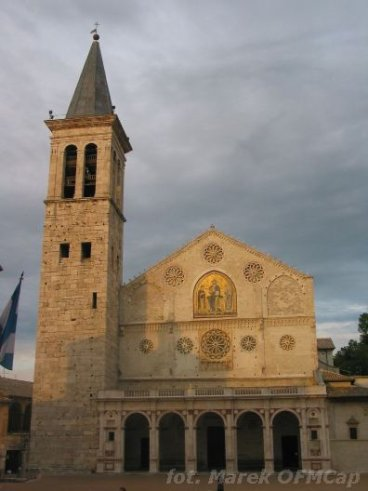

Młody Franek, po mało owocnej wyprawie na Perugię, która zakonczyła się dla niego więzieniem i chorobą, znów postanowił poszukać rycerskiej sławy i wraz z przyjaciółmi udał się do Spoleto. Tam chcieli oddać się pod komendę znanego hrabiego Waltera di Brienne. I tu Pan Bóg nieoczekiwanie i bardzo mocno wszedł w życie młodego Bernardone.
W nocy, gdy odpoczywał, usłyszał w półśnie głos pytający go dokąd dalej zamierza podążać. Gdy Franciszek przedstawił wszystkie swe ambitne zamiary, ów zapytał: "Komu lepiej służyć: Panu czy słudze?" Franciszek odpowiedział oczywiście, że lepiej Panu. Ów głos nadal pytał: "Dlaczego zatem ty starasz się znaleźć sługę zamiast Pana?"
Wtedy Franek już wiedział Kto do niego mówi i odrzekł: "Panie, co chcesz, abym czynił?". Wtedy Pan nakazał: "Wróć do Asyżu. To nie jest twoja droga." Nie trzeba dodawać ile wstydu najadł się Franciszek, gdy wrócił do rodzinnego miasta.
W katedrze Spoleto przechowywany jest do dziś oryginał listu św. Franciszka do brata Leona.
